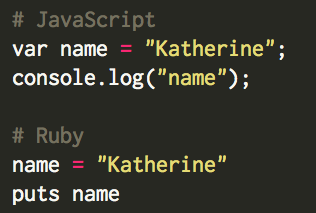
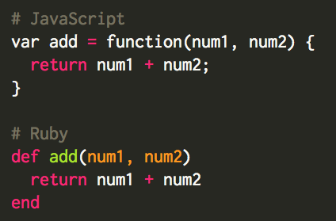

JavaScript vs Ruby Documentation
March 7, 2016
How does basic JavaScript documentation differ from Ruby documentation?
While JavaScript is one of the best programming languages to make websites interactive, the syntax requirements are much more specific than the Ruby requirements. Ruby is a more intuitive programming language, where JavaScript requires explicit steps for the interpreter to follow. The examples below help to illustrate this difference.
Defining Variables and Printing to the Console
When it comes to defining variables, JavaScript requires the keywork "var" before the variable name to specify that it is a variable. If you wanted to print the expression assigned to the variable to the console, "console.log(variableName)" would need to be used. In addition, a semicolon (;) is required after each line of JavaScript code. On the other hand, if you look at the code example below, you will see that Ruby does not require as much detail when defining variables and has shorter calls to print a variable to the console.
Defining Functions
Documentation also differs when you are defining and implementing functions. In JavaScript, you must define the function name as a variable and specify that it is a function. The contents of the function must be held within curly brackets, and each line of the code block must end with a semicolon. In comparison with Ruby, the example below shows the differences between the syntax. Defining a function in Ruby starts with def, and is simply finished with the end keyword after the code block is completed.
